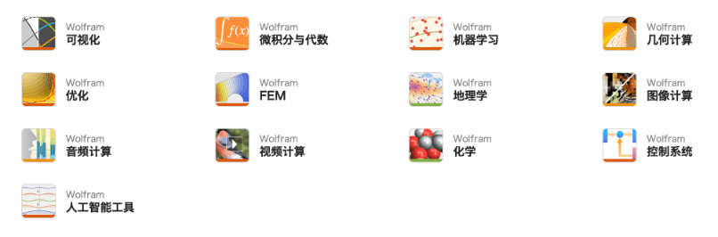

请访问原文链接：Wolfram Mathematica 15.0 (macOS, Windows) - 现代科学计算 查看最新版。原创作品，转载请保留出处。
作者主页：sysin.org
Wolfram Mathematica
全球现代技术计算的终极系统
可在桌面、云端和移动中使用

Mathematica 在其三十年的开发历程中，在技术计算领域确立了最先进的技术，并为全球技术创新人员、教育工作者、学生和其他人士提供了最主要的计算环境。
Mathematica 以卓越的技术和简便的使用方法享誉全球，在此基础上，它提供了单个集成并且持续扩展的系统 (sysin)，涵盖了最广最深的技术计算功能，并可通过网页浏览器实现云端的完美访问，以及在所有现代桌面系统上的本地访问。

用于现代技术计算的唯一选择
通过三十多年来的精心研发和不断探索，Mathematica 在许多领域独树一帜，在当今技术计算环境和工作流程中表现卓著。

一个全面集成的大型系统
Mathematica 具有涵盖所有技术计算领域的将近 6,000 个内置函数——所有这些都经过精心制作 (sysin)，使其完美地整合在 Mathematica 系统中。

不仅仅是数字，也不仅仅是数学，内容包罗万象
基于三十多年来的持续开发，Mathematica 在所有技术计算领域表现卓著，包括网络、图像、几何、数据科学、可视化、机器学习等等。
超乎想象的算法功能
Mathematica 在所有领域构建了前所未有的强大算法——许多算法都是使用
Wolfram 语言独特的开发方法和功能进行构建的。前所未有的更高等级
从超级函数到元算法，Mathematica 提供了可实现自动化并且日益完善的高级环境，使您的工作尽可能地高效。

整体的工业强度
拥有跨越各个领域的强大的高效的算法，Mathematica 是为提供工业强度而构建的 (sysin)，它的并行计算、GPU 计算等功能使其可以轻松处理大型问题。

强大且易于使用
Mathematica 凭借它的算法功能以及 Wolfram 语言的详细设计原理，创建了具有预测性建议、自然语言输入等的独特的并且易于使用的系统。
文档以及代码
Mathematica 使用 Wolfram 笔记本界面，使您可以快速整理包括文本、可运行代码、动态图形和用户界面等的丰富文档中的任何内容。
易懂的代码
使用直观的类似英文的函数名称和一致明了的设计，Wolfram 语言易于阅读、编写和学习。
显示美观的结果
Mathematica 使用最先进的计算美学和设计原理，为你呈现最美观的结果；立即创建最顶级的互动可视化效果和出版物质量级别的文档。
即时现实数据
Mathematica 可以访问广博的
Wolfram 知识库，包括最实时的数千个领域的数据。
完美的云端集成
Mathematica 目前已经完美地集成于云端系统中；可在统一强大的云端桌面混合环境中进行分享、云计算以及更多功能。

与任意内容连接
Mathematica 为与任意内容连接而构建：文件格式（180 多种）、其他语言 (sysin)、 Wolfram Data Drop、API、数据库、程序、物联网和设备，甚至其自身分布等。
超过十五万个范例
从参考资料中心中的的十五万个以上的范例，Wolfram 演示项目中的一万三千个开源演示项目和其他资源中获取帮助，开启任何项目。
覆盖范围
Mathematica 基于革新性的 Wolfram 语言。
重要核心领域

核心技术

Wolfram 语言
脱胎于 Mathematica 的基于知识的独特符号式语言，推动了 Mathematica 系统的发展。

Wolfram 算法库
全球最大的算法集成网络，为 Mathematica 提供了博大精深的内置功能。

Wolfram 笔记本界面
独特的灵活的基于文档的界面，使您可以混合 Mathematica 中的可执行代码、格式丰富的文本、动态图形和互动界面。

Natural 语言理解
从 Wolfram|Alpha 开始引入，现在完全集成到 Wolfram 技术堆栈中 (sysin)，NLU 是广泛的 Wolfram 产品和服务的关键推动力。

Wolfram Cloud
仅仅使用一个网页浏览器就可以运行 Mathematica Online 的架构技术。

Wolfram Knowledgebase
推动 Wolfram|Alpha 的独特广博的持续更新的知识库，并为 Wolfram 产品提供了可计算的现实数据。
Mathematica 发展轨迹
超过三十年的漫长历程
在 Mathematica 第一版中引入的五百多个函数，仍然涵盖在最新版的 Mathematica 中，而且总计已总增添了将近 6,000 种不同函数，以及众多具有远见卓识的重要创新思想。

1988 年革新
当 Mathematica 首次在 1988 年诞生时，它为技术计算带来了革命性的变化，由此每年都持续不断引入更多新函数、新算法和新思路。
远远超过数学范围
数学是 Mathematica 第一个大型应用领域；基于数学领域的成功经验，Mathematica 系统性地扩展到了许多新领域，包括各种技术计算格式。
创新速度越来越快
Mathematica 在三十年多的时间里遵从快速革新的发展轨迹，使得在每个阶段都构建了许多强大的新功能。
每个版本中都有重要的新思想
Mathematica 的各版本更新不仅仅是一般的软件更新；每个连续更新的版本都是在新方向上对计算模式的一次重大发展，并且引入了重要的新思路。
您在第一版中学到的技巧仍然可以用
如果您使用过首版 Mathematica，那么您在三十年前编写的代码仍然可用 (sysin)，并且能够在现今的 Mathematica 大型系统中再度遇见 Mathematica 第一版的核心思想。
三十年多来的持续发展
Mathematica 忠实于它的核心准则和严肃的设计原理，持续发展并且集成了许多新功能和方法，而无需走回头路。
下载地址
Wolfram Mathematica 15.0 for Windows x64
Wolfram Mathematica 15.0 for macOS Universal

文章用于推荐和分享优秀的软件产品及其相关技术，所有软件默认提供官方原版（免费版或试用版），免费分享。对于部分产品笔者加入了自己的理解和分析，方便学习和研究使用。任何内容若侵犯了您的版权，请联系作者删除。如果您喜欢这篇文章或者觉得它对您有所帮助，或者发现有不当之处，欢迎您发表评论，也欢迎您分享这个网站，或者赞赏一下作者，谢谢！
 支付宝赞赏
支付宝赞赏  微信赞赏
微信赞赏赞赏一下
敬请注册！点击 “登录” - “用户注册”（已知不支持 21.cn/189.cn 邮箱）。 请勿使用联合登录（已关闭）。